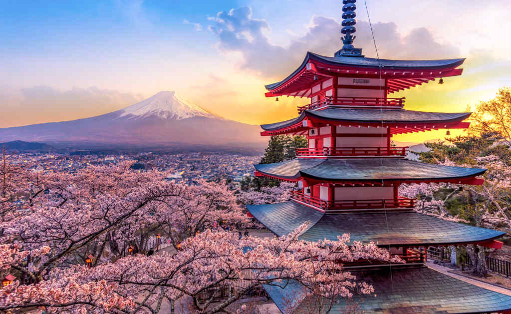
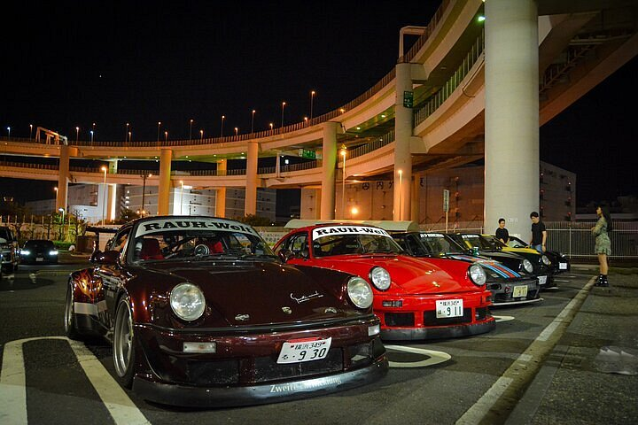
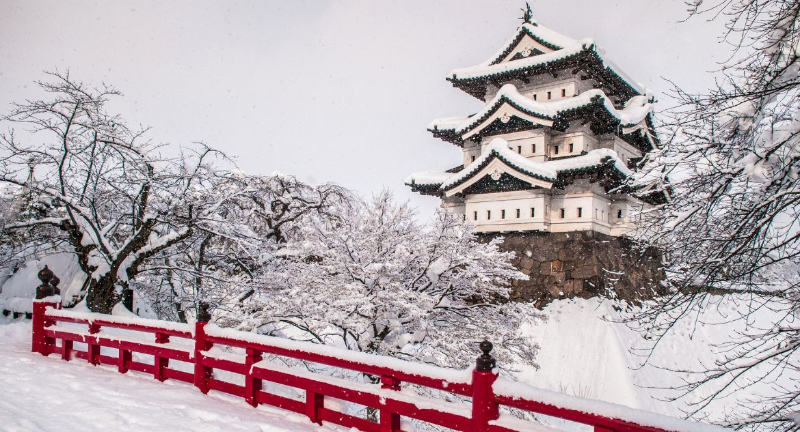
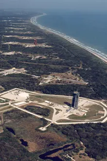
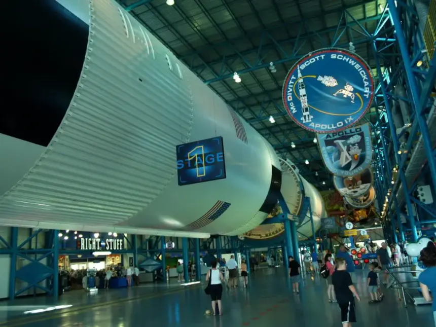
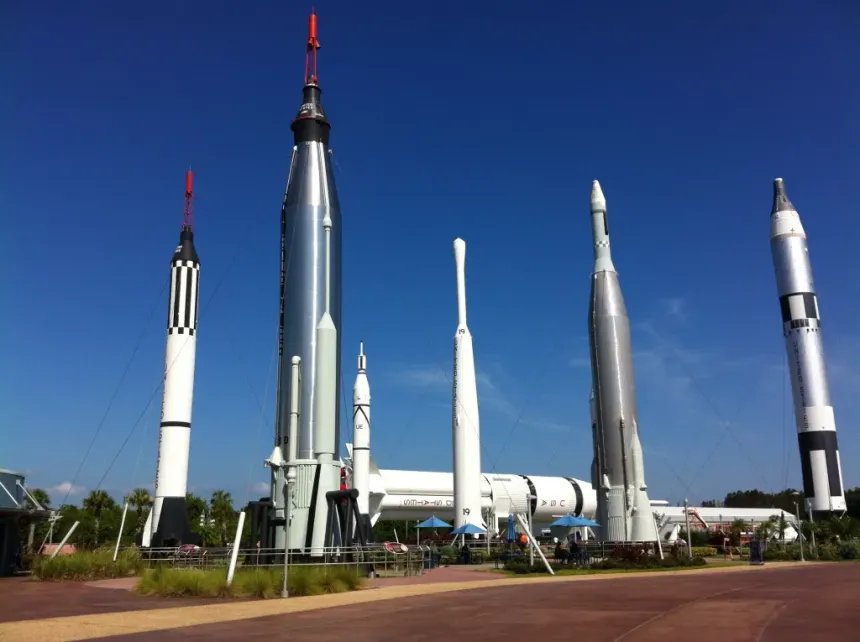

Sobre o aluno
Nome: Caio Mezini
Turma: 2ºG
O lugar dos meus sonhos
Nome do lugar: Japão
Por que quero conhecer esse lugar?
O Japão é um país fascinante, conhecido por muitas coisas, como sua cultura, tecnologia, culinária, lugares turísticos muito bonitos. Eu quero conhecer o Japão para visitar lugares como Tokyo, Kyoto, Shibuya, entre outros. Além disso, sua cultura de anime e mangá, que curto bastante. As tecnologias avançadas do país. E sua cultura aumotomtiva, que me atrai bastante, os carros japoneses são muito icônicos, eventos como encontro de carros e touge pelas montanhas, e a arte do drift japonês. O Japão é um lugar que tem muito a oferecer e eu adoraria ter a oportunidade de conhecer e experimentar tudo o que ele tem a oferecer.

Curiosidades sobre esse lugar
- Tem uma cultura automotiva muito forte e muito conhecida
- É conhecido por suas artes marciais
- As quatro estações do ano são bem definidas


Sobre o aluno
Nome: Caio Marcos Ambrósio Maciel
Turma: 2ºG

Quero conhecer:
Nome do lugar:Cabo Canaveral
Por que quero conhecer esse lugar?
Gostaria de conhecer Cabo Canaveral, na Flórida, pois é o local de onde foram realizados os lançamentos do foguete Saturno V nas missões Apollo, responsáveis por levar o ser humano à Lua. Além disso, grande parte do programa espacial americano se concentra nessa região.
Atualmente, além da NASA, empresas privadas como a SpaceX também realizam lançamentos a partir desse local. Isso acontece principalmente por causa da proximidade com a linha do Equador e da infraestrutura avançada desenvolvida para transportar, montar e lançar grandes foguetes.
Curiosidades sobre o Cabo Canaveral
- Há um museu, onde alguns foguetes e cápsulas estão expostos.
- O foguete Saturno V, usado nas missões Apollo, é um dos maiores já construídos e pode ser visto no local.
- Há espaços one o público em geral consegue assistir os lançamentos e simulações dos mesmos

